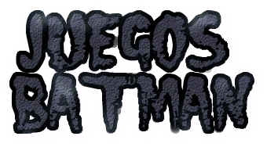

Los villanos mas peligrosos de Ciudad Gotica han escapado!! Y Batman y Robin deben deterlos.
Ayuda a tus heroes favoritos avanzar por cinco niveles en donde se pondra aprueba tu habilidad
y tus conocimientos
sobre el caballero de la noche.
Puedes jugar solo o puedes jugar con un amigo, son cinco niveles distintos en los que se tomara en cuenta tu puntaje.
¿Cuantas veces has deseado ser un super heroe? Ayudar a un amigo, a tu familia, a algun desconocido; sea cual sea la razon
todos hemos deseado tener algun superpoder en mas de una ocasion.
